<!DOCTYPE html>
  <!-- Site footer -->
    <footer class="site-footer">
      <div class="container">
        <div class="row" id="footer">
          <div class="col-sm-12 col-md-6">
            <h6>About</h6>
            <p class="text-justify">This project is the result of a collaborative effort amongst Colorado State University researchers, the Geospatial Centroid, and external partners examining the environmental and social impacts of Colorado wildfires, with a focus in the Cache la Poudre watershed and the Cameron Peak Fire in 2020.</p>
          </div>

          <div class="col-xs-6 col-md-2">
            <h6>Quick Links</h6>
            <ul class="footer-links">
              <li><a href="">About Us</a></li>
              <li><a href="">Contact Us</a></li>
            </ul>
          </div>
          <div class="col-xs-6 col-md-4">
            <ul class="footer-links">
              <li></li>
              <li></li>
            </ul>
          </div>
        </div>
        <hr />
      </div>
      <div class="container">
        <div class="row">
          <div class="col-md-8 col-sm-6 col-xs-12">
            <p class="copyright-text">Copyright &copy; 2022 All Rights Reserved by CSU Geospatial Centroid
            </p>
          </div>
        </div>
      </div>
    </footer>